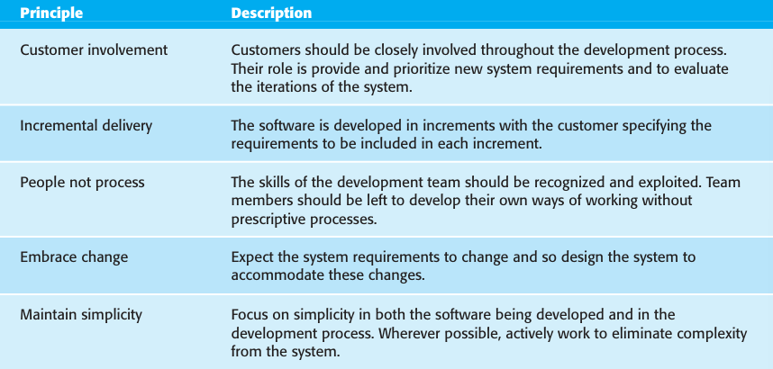

3.1
Agile Software Development
In the 1980s and early 1990s, there was a widespread view that the best way to
achieve better software was through careful project planning, formalized quality
assurance, the use of analysis and design methods supported by CASE tools, and
controlled and rigorous software development processes. This view came from the
software engineering community that was responsible for developing large, long
lived software systems such as aerospace and government systems.
This software was developed by large teams working for different companies. Teams
were often geographically dispersed and worked on the software for long periods of
time. An example of this type of software is the control systems for a modern aircraft,
which might take up to 10 years from initial specification to deployment. These plan
driven approaches involve a significant overhead in planning, designing, and document
ing the system. This overhead is justified when the work of multiple development teams
has to be coordinated, when the system is a critical system, and when many different
people will be involved in maintaining the software over its lifetime.
However, when this heavyweight, plan-driven development approach is applied
to small and medium-sized business systems, the overhead involved is so large that it
dominates the software development process. More time is spent on how the system
should be developed than on program development and testing. As the system
requirements change, rework is essential and, in principle at least, the specification
and design has to change with the program.
Dissatisfaction with these heavyweight approaches to software engineering led a
number of software developers in the 1990s to propose new ‘agile methods’. These
allowed the development team to focus on the software itself rather than on its design and
documentation. Agile methods universally rely on an incremental approach to soft
ware specification, development, and delivery. They are best suited to application devel
opment where the system requirements usually change rapidly during the development
process. They are intended to deliver working software quickly to customers, who can
then propose new and changed requirements to be included in later iterations of the sys
tem. They aim to cut down on process bureaucracy by avoiding work that has dubious
long-term value and eliminating documentation that will probably never be used.
The philosophy behind agile methods is reflected in the agile manifesto that was
agreed on by many of the leading developers of these methods. This manifesto states:
We are uncovering better ways of developing software by doing it and helping others do it. Through
this work we have come to value:
- Individuals and interactions over processes and tools
- Working software over comprehensive documentation
- Customer collaboration over contract negotiation
- Responding to change over following a plan
That is, while there is value in the items on the right, we value the items on the left more.
Probably the best-known agile method is extreme programming (Beck, 1999;
Beck, 2000), which I describe later in this chapter. Other agile approaches include
Scrum (Cohn, 2009; Schwaber, 2004; Schwaber and Beedle, 2001), Crystal
(Cockburn, 2001; Cockburn, 2004), Adaptive Software Development (Highsmith,
2000), DSDM (Stapleton, 1997; Stapleton, 2003), and Feature Driven Development
(Palmer and Felsing, 2002). The success of these methods has led to some integration
with more traditional development methods based on system modelling, resulting in
the notion of agile modelling (Ambler and Jeffries, 2002) and agile instantiations of
the Rational Unified Process (Larman, 2002).
Although these agile methods are all based around the notion of incremental devel
opment and delivery, they propose different processes to achieve this. However, they
share a set of principles, based on the agile manifesto, and so have much in common.
These principles are shown in Figure 3.1. Different agile methods instantiate these prin
ciples in different ways and I don’t have space to discuss all agile methods. Instead, I
focus on two of the most widely used methods: extreme programming (Section 3.3) and
Scrum (Section 3.4).
Agile methods have been very successful for some types of system development:
- Product development where a software company is developing a small or
medium-sized product for sale.
- Custom system development within an organization, where there is a clear com
mitment from the customer to become involved in the development process and
where there are not a lot of external rules and regulations that affect the software.

Figure 3.1 The principles of agile methods
As I discuss in the final section of this chapter, the success of agile methods has
meant that there is a lot of interest in using these methods for other types of software
development. However, because of their focus on small, tightly integrated teams,
there are problems in scaling them to large systems. There have also been experi
ments in using agile approaches for critical systems engineering (Drobna et al.,
2004). However, because of the need for security, safety, and dependability analysis
in critical systems, agile methods require significant modification before they can be
routinely used for critical systems engineering.
In practice, the principles underlying agile methods are sometimes difficult to realize:
- Although the idea of customer involvement in the development process is an
attractive one, its success depends on having a customer who is willing and able
to spend time with the development team and who can represent all system
stakeholders. Frequently, the customer representatives are subject to other pres
sures and cannot take full part in the software development.
- Individual team members may not have suitable personalities for the intense
involvement that is typical of agile methods, and therefore not interact well with
other team members.
- Prioritizing changes can be extremely difficult, especially in systems for which
there are many stakeholders. Typically, each stakeholder gives different priori
ties to different changes.
- Maintaining simplicity requires extra work. Under pressure from delivery
schedules, the team members may not have time to carry out desirable system
simplifications.
- Many organizations, especially large companies, have spent years changing
their culture so that processes are defined and followed. It is difficult for them to
move to a working model in which processes are informal and defined by devel
opment teams.
Another non-technical problem—that is a general problem with incremental
development and delivery—occurs when the system customer uses an outside organ
ization for system development. The software requirements document is usually part
of the contract between the customer and the supplier. Because incremental specifi
cation is inherent in agile methods, writing contracts for this type of development
may be difficult.
Consequently, agile methods have to rely on contracts in which the customer pays
for the time required for system development rather than the development of a spe
cific set of requirements. So long as all goes well, this benefits both the customer and
the developer. However, if problems arise then there may be difficult disputes over
who is to blame and who should pay for the extra time and resources required to
resolve the problems.
Most books and papers that describe agile methods and experiences with agile
methods talk about the use of these methods for new systems development.
However, as I explain in Chapter 9, a huge amount of software engineering effort
goes into the maintenance and evolution of existing software systems. There are only
a small number of experience reports on using agile methods for software mainte
nance (Poole and Huisman, 2001). There are two questions that should be consid
ered when considering agile methods and maintenance:
- Are systems that are developed using an agile approach maintainable, given the emphasis in the
development process of minimizing formal documentation?
- Can agile methods be used effectively for evolving a system in response to customer change requests?
Formal documentation is supposed to describe the system and so make it easier
for people changing the system to understand. In practice, however, formal docu
mentation is often not kept up to date and so does not accurately reflect the program
code. For this reason, agile methods enthusiasts argue that it is a waste of time to
write this documentation and that the key to implementing maintainable software is
to produce high-quality, readable code. Agile practices therefore emphasize the
importance of writing well-structured code and investing effort in code improve
ment. Therefore, the lack of documentation should not be a problem in maintaining
systems developed using an agile approach.
However, my experience of system maintenance suggests that the key document
is the system requirements document, which tells the software engineer what the
system is supposed to do. Without such knowledge, it is difficult to assess the impact
of proposed system changes. Many agile methods collect requirements informally
and incrementally and do not create a coherent requirements document. In this respect, the use of agile
methods is likely to make subsequent system maintenance
more difficult and expensive.
Agile practices, used in the maintenance process itself, are likely to be effective,
whether or not an agile approach has been used for system development. Incremental
delivery, design for change and maintaining simplicity all make sense when software
is being changed. In fact, you can think of an agile development process as a process
of software evolution.
However, the main difficulty after software delivery is likely to be keeping cus
tomers involved in the process. Although a customer may be able to justify the full
time involvement of a representative during system development, this is less likely
during maintenance where changes are not continuous. Customer representatives are
likely to lose interest in the system. Therefore, it is likely that alternative mecha
nisms, such as change proposals, discussed in Chapter 25, will be required to create
the new system requirements.
The other problem that is likely to arise is maintaining continuity of the develop
ment team. Agile methods rely on team members understanding aspects of the
system without having to consult documentation. If an agile development team is
broken up, then this implicit knowledge is lost and it is difficult for new team mem
bers to build up the same understanding of the system and its components.
Supporters of agile methods have been evangelical in promoting their use and
have tended to overlook their shortcomings. This has prompted an equally extreme
response, which, in my view, exaggerates the problems with this approach (Stephens
and Rosenberg, 2003). More reasoned critics such as DeMarco and Boehm
(DeMarco and Boehm, 2002) highlight both the advantages and disadvantages of
agile methods. They propose a hybrid approach where agile methods incorporate
some techniques from plan-driven development may be the best way forward.